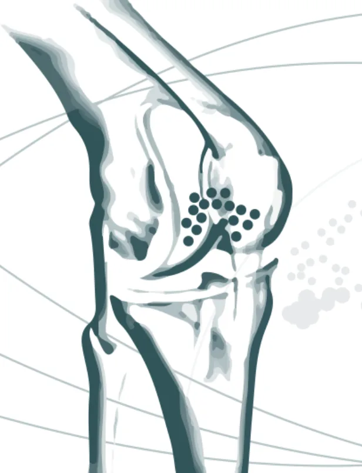
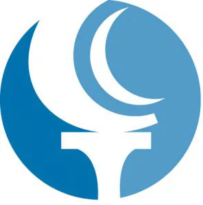
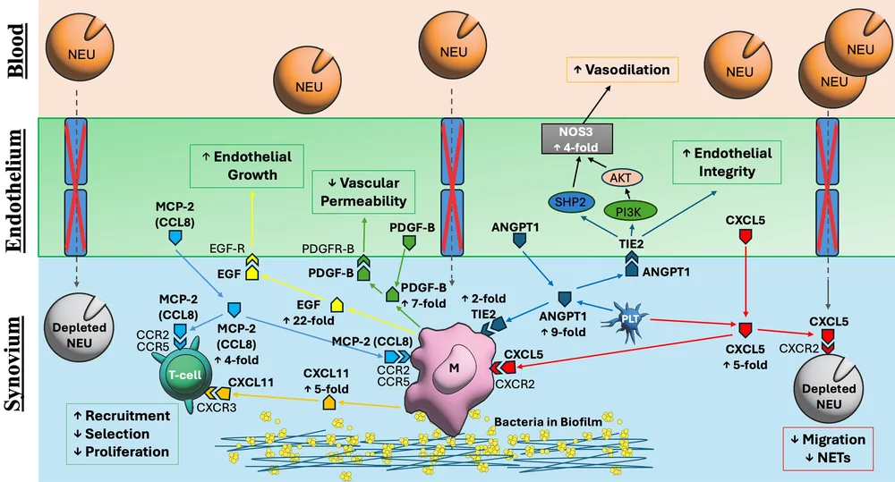
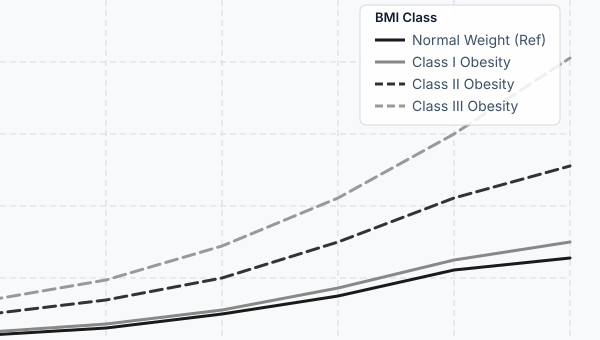
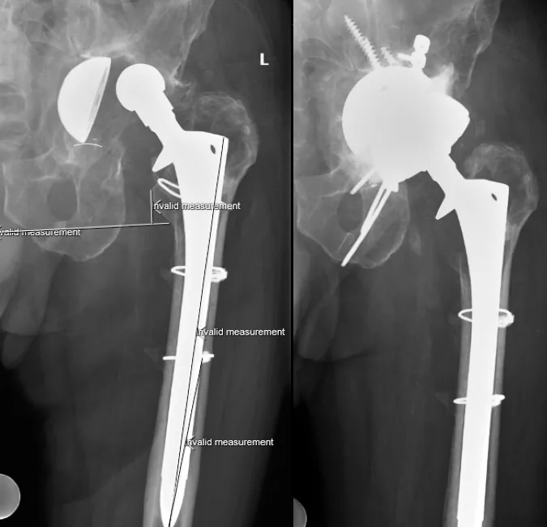
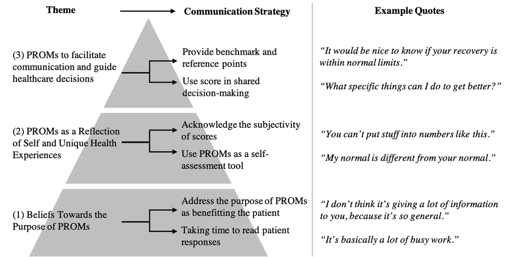

My research tackles the problems others avoid. A patient walks into the clinic with a failing joint, but the infection hides inside the immune system, the system denies surgery based on body size, the technology rides hype instead of evidence, and the metrics miss what the patient actually came for. I combine bench science, clinical data, and systems thinking to answer the four hardest questions in surgery.


I translate complex orthopaedic science for clinicians, the press, and the public. My work on hidden joint infections, the immunology of implant tolerance, bacteriophage therapy for resistant infection, equitable access to joint replacement, surgical team dynamics, and the limits of patient-satisfaction metrics has been featured in The New York Times and recognized with national awards. As Editor-in-Chief of the Journal of Bone and Joint Infection, I regularly speak, write, and give expert commentary on the questions below.
Invite Dr. Amanatullah to speak or comment →
A patient recovers from joint replacement only to learn, months later, that bacteria were hiding inside the implant all along. My deepest body of work asks why we miss these infections and how to find them. We’ve shown that biofilm-resident bacteria hijack the immune system to induce tolerance, and that persistent inflammation after apparent “cure” unmasks a dormant microbial state capable of reactivation. The goal is to give every patient a definitive answer: infected or not.

A patient with obesity is told she’s too risky for surgery. But our research shows that operative time, not the patient’s body, mediates 20–25% of obesity-related complications. When we enforce BMI cutoffs, we deny access based on system inefficiency, not patient physiology. This work reframes the question: instead of asking whether a patient is “safe enough,” we ask whether the system is good enough to serve every patient who walks through the door.

The patient is on the table. Can we make this surgery more precise, less invasive, and more reproducible? I’ve advanced the direct superior approach for hip replacement, contributed to MRNet, a deep-learning model for knee MRI, and studied how robotics and navigation change alignment outcomes. Equally important is knowing when not to adopt: my work on fear-driven technology adoption shows how fear-of-missing-out and hype cycles push surgeons toward tools that haven’t earned the patient’s trust.

The surgery is done. But did the patient get what they came for? Our work shows that satisfaction scores are a poor proxy for quality, and that a gap exists between what surgeons measure and what patients value. By discussing PROMs directly with patients we increase pain self-efficacy, and our episode-based quality framework, published in JAMA Network Open, proposes measuring what matters across the full arc of recovery, not just the index hospitalization.